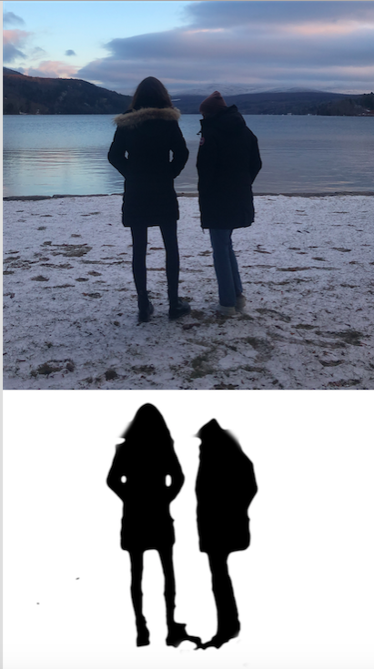

Introduction to 2D Design
This week, I tried to learn different procedures in Inkscape. The following details some of the new skills I learned with examples of work produced.
Converting a bitmap picture into a vector format
I began by trying the example on the site. I followed the steps to trace the bitmap of the paddle sketch picture into a vector. I played around with the features in the dialog box to see how the picture would change. I changed the line color to red as shown below.
I then tried coverting some other pictures from google into vector formats. I first converted them to bitmaps and then repeated the above steps to trace the outlines of each picture and create vectors. Below are pictures of the bitmaps and the corresponding vectors.
Flower Pictures to Vector Formats

Using GIMP for processing a photograph for vinyl cutting
I imported an image of my friend and I into GIMP. Under color menu, I chose threshold option. Adjusted it to get the color I wanted. I applied the blur Gaussian filter. Then, I applied threshold again to make the borders sharper and get the level of detail I wanted. I ended up with a black-and-white png for vinyl-cutting.
My image that I turned into a B&W png to vinyl-cut

Next Steps
- Continue working on site and fix page layout
- Make sure all page links work on nav bar
- Fix Arduino download errors
- Try making Blink program work
- Build more complex circuits
The Assignment
This week's assignment was to create a press fit construction kit using a laser cutter. I have never used a laser cutter before so this was all a new learning experience for me. I decided to focus more on the design aspect of this assignment as I had also never used a CAD software before. For this course, I will be using a web-based CAD software called Onshape. I had issues downloading and connecting to other sofwtare such as Fusion360 and found that Onshape had all the functionalities I would possibly need for this class. I began by completing the tutorial design project detailed on the course page. Below is an outline of this process.
\